Dans l'industrie financière moderne, il existe un mythe tenace selon lequel la surperformance boursière serait réservée à une élite équipée de terminaux informatiques coûtant des dizaines de milliers d'euros par an, à l'image du célèbre terminal Bloomberg. Pire encore, une multitude de plateformes web tentent aujourd'hui de convaincre les investisseurs particuliers qu'il est indispensable de souscrire à des abonnements mensuels onéreux — souvent facturés entre 30 € et 100 € par mois — pour accéder à de simples ratios financiers ou suivre l'évolution de leur patrimoine.
En tant qu'investisseur rationnel, nous savons à quel point chaque euro compte. Payer 50 € par mois pour un logiciel d'analyse, c'est se priver de 600 € par an qui auraient pu être investis dans d'excellentes entreprises et profiter de la magie des intérêts composés pendant vingt ans. La vérité est implacable : toutes les données financières des entreprises cotées sont publiques par obligation légale. Il est donc strictement inutile pour un investisseur particulier de payer pour accéder à de la donnée brute qui est accessible gratuitement sur Internet, à condition de savoir où chercher et de connaître les bons sites.
Dans ce chapitre, je vous ouvre les coulisses de ma boîte à outils personnelle. Tous les outils que je vais vous présenter ici sont 100% gratuits. Pour organiser notre flux de travail de manière professionnelle et méthodique, nous allons distinguer quatre grands piliers :
- Le suivi des fondamentaux : pour disséquer les bilans et calculer notre Score Quality.
- Le suivi des Earnings : pour analyser les publications trimestrielles et lire les transcriptions.
- Le suivi des mouvements des gérants de fonds : pour observer les achats et ventes des meilleurs investisseurs de la planète.
- Le suivi du portefeuille au quotidien : pour piloter nos positions, nos dividendes et notre performance globale.
1. Le Suivi des Fondamentaux : Disséquer la Qualité
Avant d'investir le moindre centime dans une entreprise, nous devons auditer son historique financier sur une décennie. Croissance du chiffre d'affaires, évolution du bénéfice par action (EPS), génération de Free Cash Flow, retour sur capitaux investis (ROIC), niveau d'endettement et rachats d'actions : toutes ces métriques constituent le socle de notre méthode Quality Investing. Voici les trois plateformes gratuites que j'utilise pour extraire ces données en quelques secondes.
📊 A. FinanceCharts.com : La visualisation instantanée
FinanceCharts.com est sans doute l'un des sites les plus ergonomiques et complets pour évaluer rapidement une action américaine. Là où la plupart des sites gratuits vous limitent aux trois dernières années d'historique comptable, FinanceCharts vous permet de visualiser toutes les métriques fondamentales clés sur 5, 10, voire 20 ans sous forme de graphiques interactifs d'une clarté remarquable.
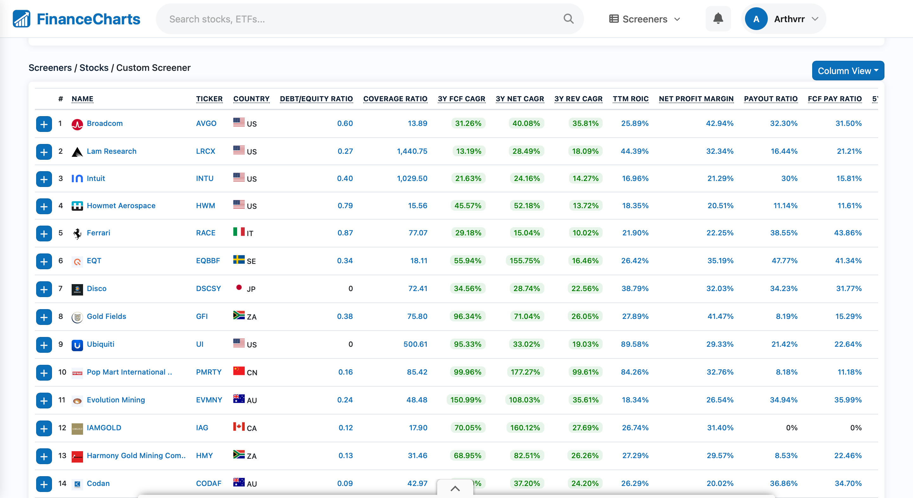
En tapant simplement le ticker d'une entreprise, vous accédez immédiatement aux taux de croissance annuels moyens (CAGR), à l'évolution du nombre d'actions en circulation (idéal pour vérifier les buybacks), aux ratios de distribution des dividendes (Payout Ratio et FCF Payout Ratio) ainsi qu'aux multiples de valorisation historiques. C'est mon point d'entrée favori pour remplir rapidement le Calculateur Quality Score.
🔍 B. GuruFocus.com : L'encyclopédie des ratios financiers
GuruFocus.com est une véritable mine d'or analytique qui rivalise avec les terminaux professionnels. Le site agrège une quantité phénoménale de données sur la rentabilité, la solvabilité et la valorisation intrinsèque des entreprises mondiales. C'est sur GuruFocus que vous trouverez les indicateurs les plus pointus, tels que la comparaison directe entre le ROIC et le WACC (coût moyen pondéré du capital), le ratio Debt-to-EBITDA, ou encore l'Interest Coverage.
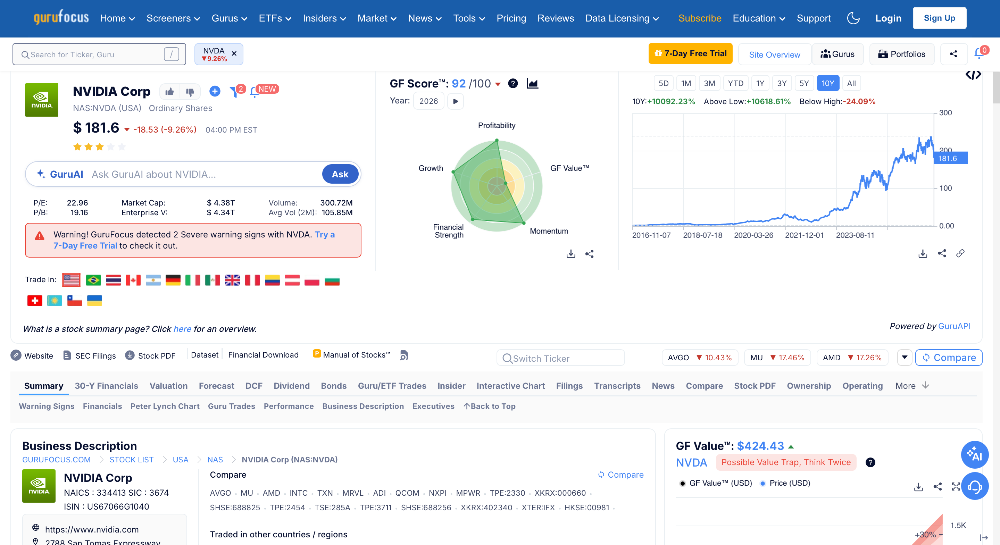
L'astuce d'initié 💡
GuruFocus impose une limite de consultation gratuite : après avoir ouvert quelques pages d'entreprises sur votre navigateur habituel, un bandeau bloquant vous demandera de souscrire à un abonnement payant. Pour contourner cette restriction très simplement, ouvrez toujours GuruFocus dans une fenêtre de navigation privée (mode Incognito). Dès que la limite est atteinte, fermez la fenêtre privée et rouvrez-en une nouvelle : le compteur repart à zéro, vous offrant un accès illimité et 100% gratuit !
📑 C. ROIC.ai : Les états financiers bruts sur 15 ans
Pour les puristes qui aiment plonger directement dans les tableaux de chiffres bruts (inspirés des célèbres fiches papier Value Line qu'utilisait Warren Buffett à ses débuts), roic.ai est une excellente ressource complémentaire. Le site compile les comptes de résultat, les bilans et les tableaux de flux de trésorerie avec un historique profond allant de 10 à plus de 15 ans sur une seule et même page épurée.
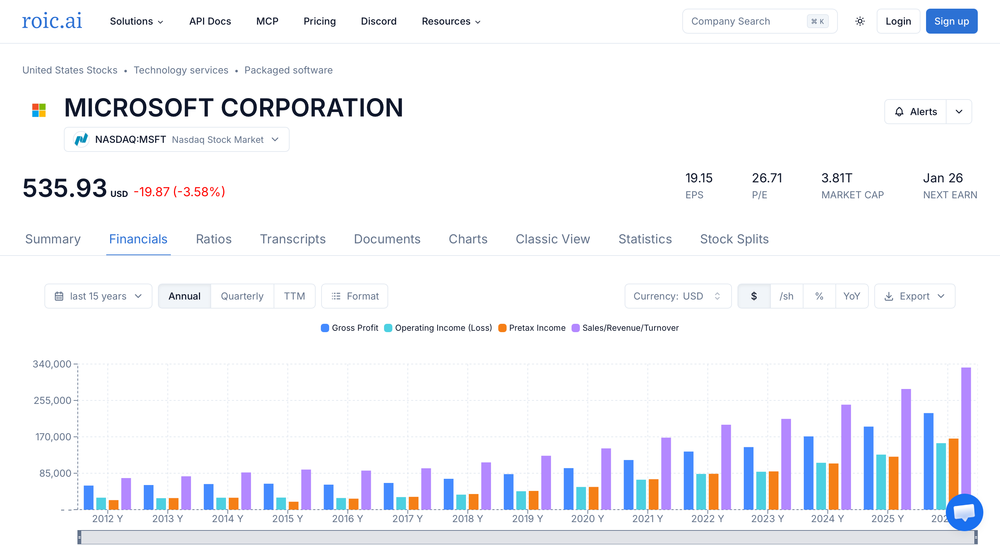
En toute transparence, je l'utilise un peu moins souvent au quotidien car le duo formé par FinanceCharts et GuruFocus réunit déjà 95% de la donnée visuelle dont j'ai besoin. Néanmoins, ROIC.ai reste un excellent favori à garder sous le coude pour vérifier l'évolution d'une ligne comptable spécifique sur le très long terme.
2. Le Suivi des Earnings : Au Cœur des Publications Trimestrielles
Comme nous l'avons martelé dans le chapitre précédent, un investisseur de qualité ne regarde pas les variations quotidiennes du prix de ses actions : il surveille l'exécution opérationnelle du business. Et cette exécution se vérifie quatre fois par an, lors de la saison des résultats trimestriels (les Earnings). Il est absolument indispensable et obligatoire de lire, d'analyser et de comprendre les résultats trimestriels des entreprises que nous détenons en portefeuille, ainsi que celles qui figurent dans notre Watchlist.
🎙️ EarningsLabs.com : L'historique, les Transcripts et l'IA
Pour accomplir ce travail de suivi sans avoir à fouiller dans des documents PDF austères de 80 pages déposés auprès de la SEC, j'utilise EarningsLabs.com. Cet outil gratuit est une véritable pépite pour suivre les publications des entreprises américaines.
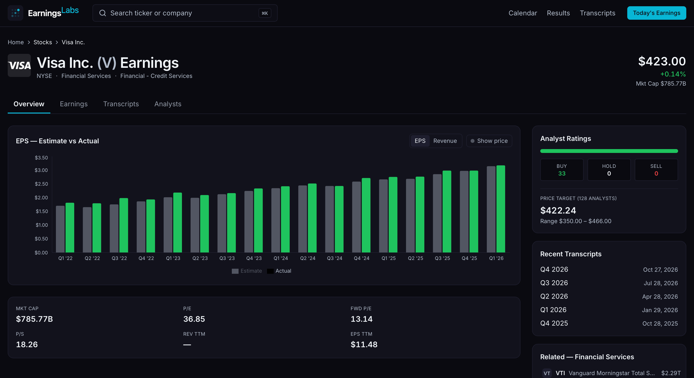
EarningsLabs regroupe trois fonctionnalités majeures qui font gagner un temps précieux à l'investisseur particulier :
- L'historique complet des résultats : Vous visualisez trimestre après trimestre si l'entreprise a battu ou manqué les attentes de Wall Street sur son Chiffre d'Affaires et son Bénéfice Par Action (EPS), ainsi que sa régularité historique.
- Le Transcript intégral : Le site met à disposition la retranscription écrite mot à mot de la conférence téléphonique (Earnings Call) tenue par le PDG et le Directeur Financier, y compris la séance cruciale des questions-réponses avec les analystes des grandes banques.
- Le résumé intelligent par IA : Si vous manquez de temps pour lire 15 pages de retranscription en anglais, l'intelligence artificielle intégrée au site génère une synthèse structurée des annonces clés, des prévisions (Guidance), des vents porteurs et des défis mentionnés par la direction.
Bien que des plateformes comme EarningsLabs soient formidables pour obtenir une vue d'ensemble rapide, évaluer la régularité d'une entreprise et vérifier si elle bat ou rate fréquemment les estimations de Wall Street, il ne faut pas perdre de vue un principe fondamental de l'investissement. La source d'information la plus pure et la plus fiable reste toujours le site officiel de l'entreprise elle-même. En tant qu'actionnaire, ou futur actionnaire, vous vous devez de visiter la section "Investor Relations" de la société. C'est là que vous trouverez les rapports officiels déposés auprès de la SEC (comme les fameux formulaires 10-K annuels et 10-Q trimestriels), sans aucun filtre, sans l'interprétation biaisée des journalistes financiers, et sans la simplification parfois hasardeuse de l'intelligence artificielle. Les agrégateurs vous donnent l'historique et la tendance ; le site de l'entreprise vous donne la vérité brute et les détails de l'allocation du capital.
3. Le Suivi des Mouvements des Gérants de Fonds
Nous aborderons ce sujet en profondeur dans un prochain chapitre dédié, mais sachez dès maintenant qu'aux États-Unis, tout fonds d'investissement gérant plus de 100 millions de dollars a l'obligation légale de déclarer ses positions acheteuses chaque trimestre via le formulaire 13F. Observer les achats et les ventes des plus grands gérants de la planète (les "Super-Investisseurs") est une source d'inspiration exceptionnelle pour dénicher de nouvelles idées d'investissement pré-filtrées par l'élite mondiale.
🏛️ A. Dataroma.com : La bible des Super-Investisseurs
Ne vous fiez surtout pas à son design très sobre qui semble tout droit sorti des années 2000 : Dataroma.com est une référence absolue utilisée par les investisseurs fondamentaux du monde entier. Le site compile automatiquement toutes les déclarations trimestrielles d'une sélection rigoureuse des meilleurs gérants orientés Value et Quality (Warren Buffett, Terry Smith, Dev Kantesaria, Chuck Akre, Bill Ackman, Li Lu...).
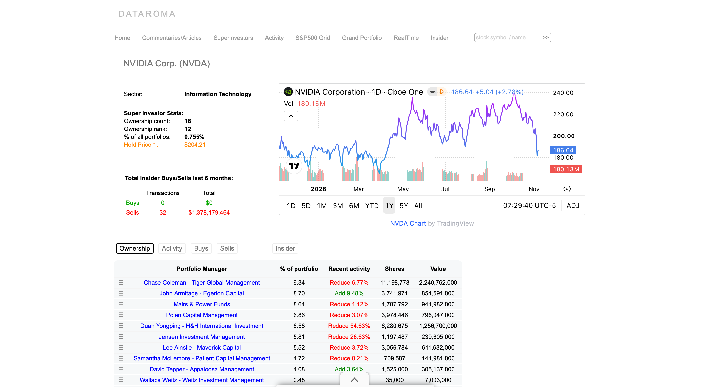
Dataroma est particulièrement redoutable grâce à ses statistiques croisées : vous pouvez y consulter le Top 10 des entreprises les plus détenues par ces super-investisseurs, ainsi que les 10 actions les plus achetées ou vendues au cours du dernier trimestre. Mieux encore, en recherchant le ticker de n'importe quelle entreprise américaine, vous voyez instantanément quels grands gérants la possèdent en portefeuille, à quel poids, et s'ils ont récemment renforcé ou allégé leur position.
🎯 B. StockCircle.com : Graphiques d'achats, Congrès US & Insiders
Si vous préférez une interface beaucoup plus moderne et visuelle, StockCircle.com est le complément idéal de Dataroma. Le site permet également de décortiquer le portefeuille détaillé des grands gérants de fonds, mais il y ajoute une dimension graphique extrêmement parlante : sur la courbe du cours de l'action, vous visualisez les points exacts où le gérant a acheté ou vendu ses titres au fil des années, avec l'estimation de sa performance sur la ligne.
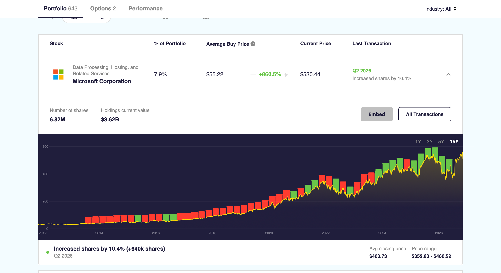
Le véritable atout supplémentaire de StockCircle réside dans le suivi de deux catégories d'acteurs très particulières : les membres du Congrès américain (les politiciens qui siègent dans les commissions réglementaires et dont les transactions boursières sont publiques) ainsi que les Insiders d'entreprises (les PDG, Directeurs Financiers et membres du conseil d'administration qui achètent ou vendent les actions de leur propre société). Comme le dit l'adage à Wall Street : un dirigeant peut vendre ses actions pour mille raisons personnelles, mais s'il en achète massivement avec son propre argent, il n'y a qu'une seule raison — il pense que l'action va monter.
4. Le Suivi du Portefeuille au Quotidien : Piloter son Patrimoine
Une fois nos analyses effectuées et nos actions en portefeuille, il nous faut des outils fiables pour passer nos ordres, suivre nos courbes face au marché, et surtout mesurer chirurgicalement chaque métrique de notre patrimoine. Voici les quatre outils qui composent mon écosystème de suivi quotidien.
🏦 A. Mon Courtier : DEGIRO
Pour loger mon Compte-Titres Ordinaire (CTO) et passer mes ordres d'achat, j'utilise le courtier européen DEGIRO. Soyons parfaitement honnêtes : l'interface de DEGIRO est très basique, vieillissante, et ses outils d'analyse ou de suivi de performance sont quasiment inexistants. Il est impossible d'y voir un graphique d'évolution de son portefeuille digne de ce nom, ni d'analyser ses dividendes ou son rendement sur coût.
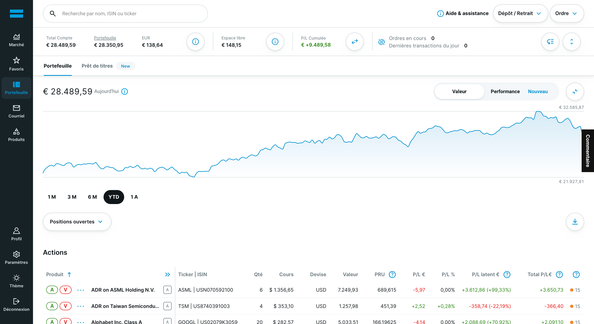
Cependant, je ne demande pas à mon courtier d'être un logiciel d'analyse : je lui demande d'être fiable, sécurisé et peu coûteux en frais de courtage. Je me rends donc sur DEGIRO uniquement pour passer mes ordres d'achat ou pour consulter rapidement les performances journalières brutes de mes lignes.
📈 B. Google Finance : Benchmarking rapide et synthèse IA
Lorsque je souhaite observer rapidement l'évolution du cours d'une action ou comparer visuellement une entreprise face aux grands indices mondiaux comme le S&P 500 ou le Nasdaq 100, j'utilise Google Finance. L'outil est d'une rapidité exemplaire, accessible en un clic sur ordinateur comme sur téléphone, et permet de superposer plusieurs courbes sur différentes échelles de temps.
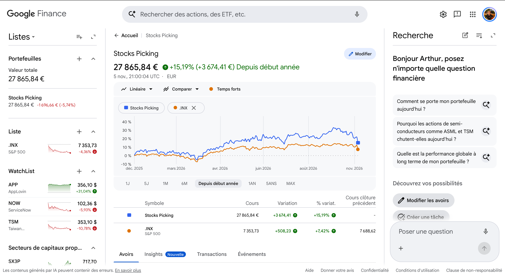
De plus, Google a récemment intégré des fonctionnalités d'intelligence artificielle très pertinentes directement sous les graphiques. En quelques lignes synthétiques, l'IA vous permet de comprendre le contexte macroéconomique du jour et vous explique factuellement pourquoi telle action ou tel secteur connaît un mouvement brusque à la hausse ou à la baisse.
🗺️ C. Finviz.com : La cartographie visuelle du marché
Lorsque l'on a la tête plongée dans l'analyse microéconomique d'une action spécifique, il est parfois salutaire de prendre de la hauteur pour observer la dynamique globale du marché. Pour obtenir cette vision macroscopique en un seul coup d'œil, mon outil de prédilection est la carte thermique (Heatmap) du site Finviz.com (Financial Visualizations). C'est un outil d'une puissance visuelle redoutable, utilisé par les traders professionnels comme par les investisseurs de long terme.
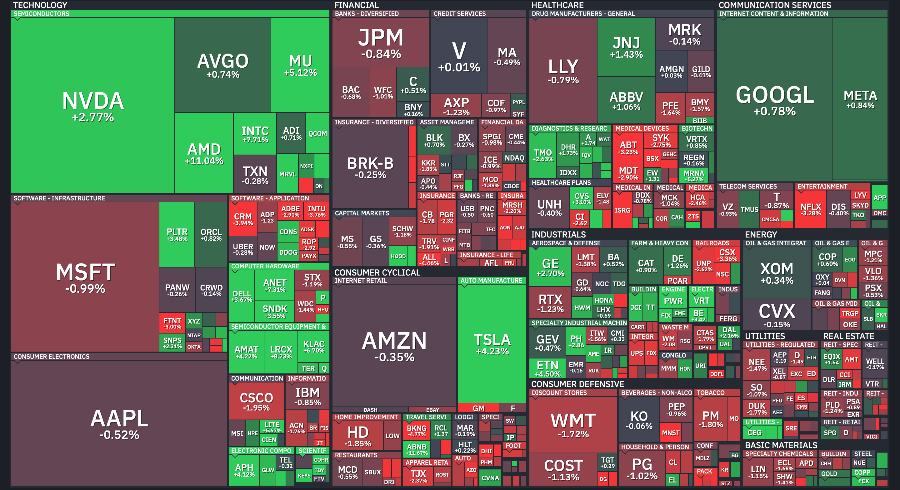
Cette carte divise l'intégralité du S&P 500 par grands secteurs d'activité (Technologie, Santé, Finance, Consommation, etc.). La taille de chaque rectangle est strictement proportionnelle à la capitalisation boursière de l'entreprise. C'est un excellent moyen de se rendre compte visuellement du poids titanesque des géants de la tech (Apple, Microsoft, NVIDIA) par rapport au reste de l'économie. Les couleurs (du vert vif au rouge sang) vous indiquent immédiatement si le marché subit une rotation sectorielle — par exemple, si les investisseurs vendent massivement la technologie pour se réfugier dans l'énergie ou les biens de consommation courante. C'est un outil totalement gratuit qui aide à contextualiser les mouvements de votre propre portefeuille par rapport à la tendance générale.
📗 D. Google Sheets : La liberté totale (et ses limites)
Pendant longtemps, Google Sheets a été le pilier central du suivi de mon portefeuille. Le grand avantage d'un tableur, c'est qu'il est entièrement gratuit et personnalisable à l'infini. Vous partez d'une feuille blanche et vous pouvez absolument tout traquer selon vos propres règles : l'historique de vos transactions, votre Watchlist, vos modèles de valorisation DCF, ou la répartition de vos dividendes.
Cependant, après plusieurs années d'utilisation intensive, Google Sheets montre de sérieuses limites pour un investisseur exigeant :
- Une automatisation très limitée : Les formules natives (
=GOOGLEFINANCE()) permettent uniquement de récupérer le prix de l'action en quasi temps réel, le PER actuel et quelques données basiques. Tout le reste — dividendes, FCF, ROIC, transactions, taxes — doit être entré et maintenu manuellement à la sueur de votre front. - Un travail de design fastidieux : Par défaut, un tableur est austère et peu lisible. C'est à vous de passer des dizaines d'heures à ajuster les couleurs, les bordures et les graphiques pour essayer de le rendre visuellement agréable, avec un résultat qui reste souvent artisanal.
- Aucune adaptabilité d'écran (Non-Responsive) : C'est son plus grand défaut technique. Un tableau de bord conçu sur l'écran de votre ordinateur devient totalement illisible sur un smartphone, ou se déforme complètement dès que vous passez d'un écran portable 13 pouces à un grand moniteur externe.
💎 E. BlueChip : L'Application macOS Tout-en-Un Ultime (100% Gratuite)
C'est précisément pour répondre à la frustration causée par les interfaces médiocres des courtiers et la rigidité des tableurs Google Sheets que j'ai décidé de développer BlueChip. BlueChip est une application native de gestion de portefeuille tout-en-un, pensée par un investisseur Quality, spécifiquement pour les investisseurs Quality.
Au lieu d'éparpiller vos données sur dix fichiers différents, BlueChip centralise l'intégralité du contrôle de votre patrimoine au sein de 14 modules intégrés d'une fluidité absolue :
- Pilotage & Performance : Tableau de bord global, suivi de la croissance du portefeuille sur plusieurs années, objectifs personnalisables avec barres de progression, et module de Benchmarking complet pour mesurer votre surperformance réelle face au S&P 500.
- Dividendes & Cash-Flow : Suivi chirurgical des dividendes bruts et nets reçus mois par mois, calcul automatique du rendement actuel et du Yield on Cost (rendement sur prix de revient), et projection de votre boule de neige sur 10 ans.
- Qualité & Valorisation : Intégration native des ScoreCards de qualité (/30) avec graphiques radars, suivi des Prix Cibles, marges de sécurité, exposition géographique du chiffre d'affaires et matrice Qualité vs Valorisation.
- Comptabilité, Frais & Assistant IA : Historique complet de chaque transaction (achats, ventes, dépôts), audit précis des taxes et frais de courtage (TOB, frais courtier), compagnon discret dans la barre des menus du Mac, et assistant d'analyse par Intelligence Artificielle avec contexte persistant.
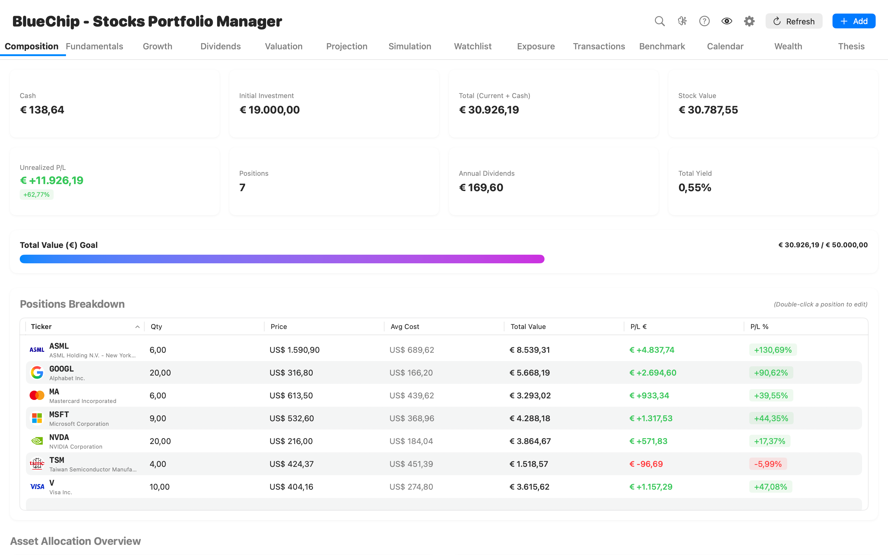
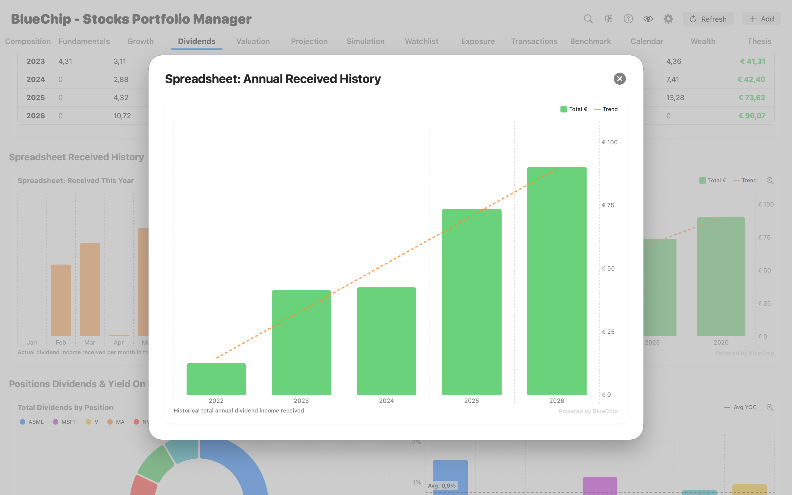
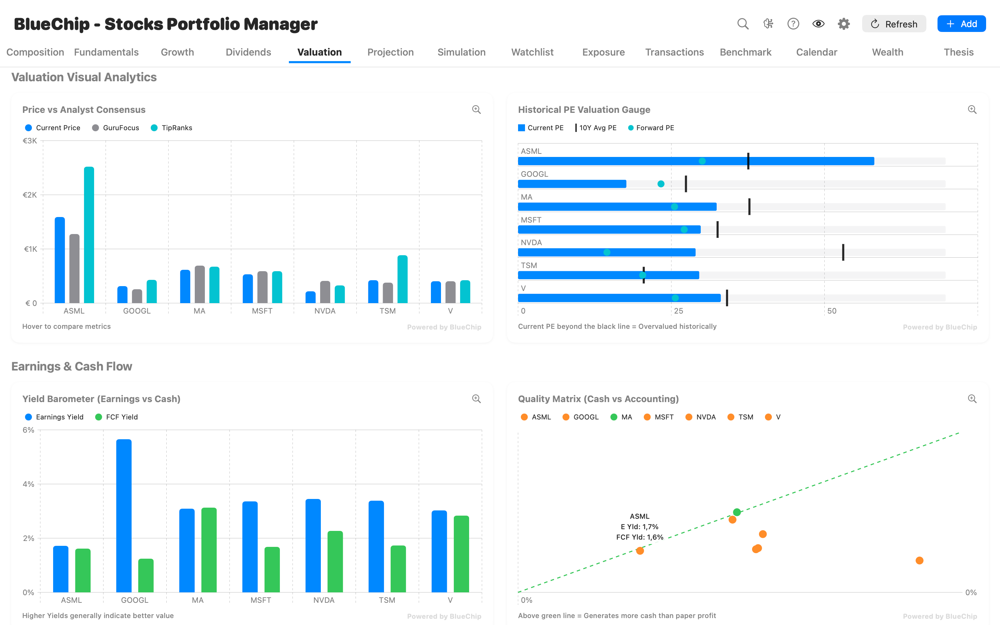
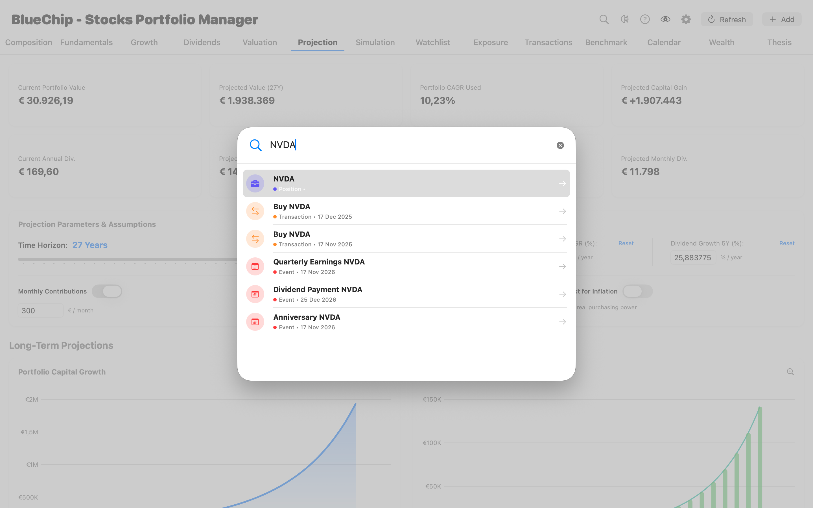
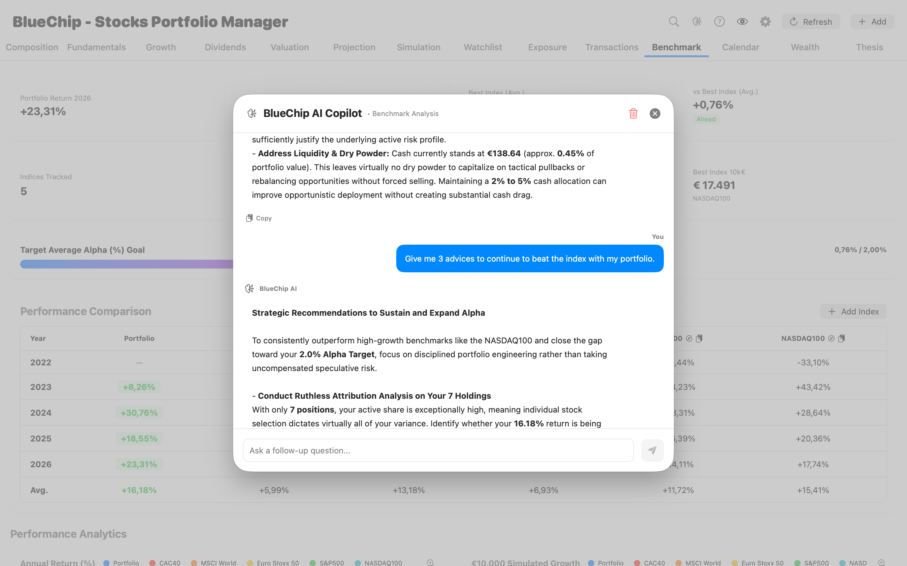
Trois caractéristiques fondamentales distinguent BlueChip de tous les agrégateurs du marché :
- Une maîtrise et une confidentialité totales : Dans BlueChip, vous entrez vos données vous-même. C'est un choix philosophique fort : vous n'avez jamais à donner les identifiants bancaires de votre courtier à un serveur tiers, vos données sont chiffrées localement sur votre machine, vous ne subissez aucun bug de synchronisation bancaire, et le fait de saisir chaque transaction ou dividende vous oblige à garder une conscience aiguë de la gestion de votre portefeuille.
- Conçu exclusivement pour macOS : Développée nativement pour l'écosystème Apple, l'application offre un design ultra-soigné, une réactivité instantanée et une navigation au clavier pensée pour les investisseurs exigeants.
- 100% Gratuit : Fidèle à la philosophie de ce chapitre, BlueChip est mis à disposition gratuitement, sans abonnement caché ni vente de vos données personnelles.
Découvrir BlueChip 💎
Prenez le contrôle total de vos investissements avec nos 14 modules d'analyse et de suivi patrimonial conçus sur-mesure pour le Quality Investing.
🔑 Ce qu'il faut retenir
Un investisseur particulier n'a absolument aucun besoin de payer des abonnements coûteux pour analyser le marché avec une rigueur professionnelle. Toute la donnée financière mondiale est accessible gratuitement si l'on structure sa boîte à outils avec intelligence.
Pour auditer les fondamentaux sur 10 à 15 ans, combinez FinanceCharts, GuruFocus (en navigation privée) et ROIC.ai. Pour ne jamais manquer une publication trimestrielle et lire les transcriptions ou leurs résumés par IA, appuyez-vous sur EarningsLabs. Pour puiser des idées d'investissement dans les portefeuilles des plus grands gérants de fonds et des dirigeants d'entreprises, consultez Dataroma et StockCircle.
Enfin, ne vous contentez pas de l'interface limitée de votre courtier : suivez vos graphiques sur Google Finance et pilotez l'intégralité de vos métriques patrimoniales avec précision sur un tableau de bord dédié comme Google Sheets ou l'application macOS gratuite BlueChip.